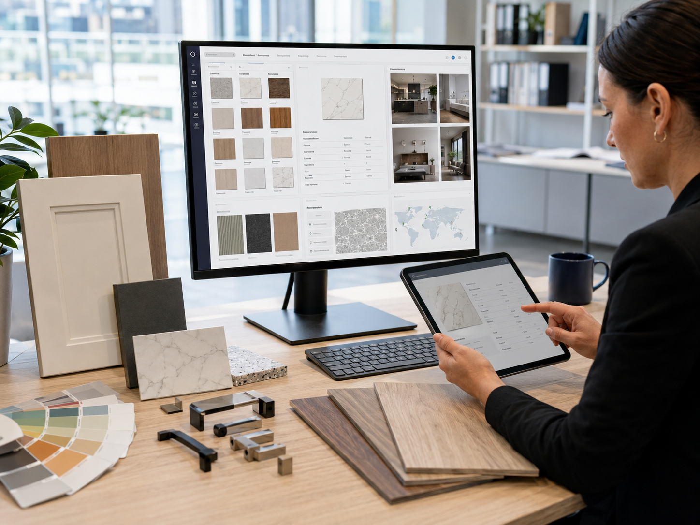

Tiles & Surfaces
Floor and wall tiles, porcelain, ceramic, stone and surface materials for residential, commercial and project use.
We supply quality building and renovation materials to builders, developers, designers and homeowners across Australia. Our Moorebank facility spans approximately 20,000 sqm — a 10,000 sqm display centre and 10,000 sqm warehouse and logistics centre.
Sydney Showroom · Trade & Retail
DNY Building Supply operates a 20,000 sqm facility in Moorebank, Sydney — including a 10,000 sqm display centre and 10,000 sqm warehouse. We supply trade professionals and homeowners, and source specialist products directly from trusted manufacturers.
Our Moorebank display centre showcases tiles, surfaces, bathroom fittings, kitchen products, flooring and more. Trade customers and homeowners are welcome to visit, view samples and discuss project requirements with our team.
For specialist items or large-volume project requirements, we source directly from a trusted network of manufacturers, delivering competitive pricing alongside local service and support.
DNY Building Supply is connected to DNY Cross Border Group's global supply chain, giving us direct access to manufacturers across Asia and beyond for quality products at competitive prices.
Product Categories
A wide range of products for residential, commercial and renovation projects — available in-stock or sourced to order.
Floor and wall tiles, porcelain, ceramic, stone and surface materials for residential, commercial and project use.
Vanities, basins, bathtubs, shower systems, tapware, fittings and complete bathroom supply packages.
Cabinetry, benchtops, sinks, tapware, kitchen fittings and related supply for new builds and renovations.
Joinery boards, timber products, cabinetry panels and interior fit-out related materials.
Timber flooring, vinyl planks, hybrid flooring, laminate and surface finishing options.
Interior and exterior doors, window systems, glass products and project-based opening solutions.
Hardware, fixings, plumbing supplies, tools and construction-related building supplies.
Specialist sourcing for custom sizes, project-specific materials, landscaping and outdoor supply.
Our Services
We carry a range of building materials in stock at our Sydney warehouse, ready for immediate order, collection or delivery.
Visit our Moorebank display centre — 10,000 sqm of building materials on show. View and compare samples in person, with our team on hand to advise on product selection and suitability for your project.
Need something specific or in large volume? We source directly from our global manufacturer network to meet your project requirements at competitive pricing.
Builders, contractors, developers and fit-out companies are welcome to apply for a trade account for ongoing project pricing and priority service.
Bring your plans, specifications or materials list and we will prepare a full project quote covering all required material categories.
We arrange delivery to project sites across Sydney and surrounding areas. Large or interstate orders can be discussed with our team.
Who We Serve
From large-scale commercial developments to single-home renovations, we supply quality building materials to a wide range of customers — with trade accounts, project quotes and in-person showroom support available for all.
Why DNY Building Supply
Our Moorebank display centre spans 10,000 sqm of building materials on show, open for trade and retail customers. View samples in person and get advice from our team before committing to your project materials.
From tiles and surfaces to bathrooms, kitchens, flooring, hardware and more — we stock and source a broad range of materials across all key building categories.
We source directly from a trusted global network of manufacturers, reducing supply chain steps to deliver quality products at competitive prices.
Trade accounts are available for regular buyers with project pricing. Individual homeowners and smaller orders are equally welcome at competitive retail pricing.
Our team can help with product selection, specification queries, budget planning and material comparisons for projects of any size.
We maintain in-stock levels on key products and provide confirmed lead times on sourced orders so your project can plan ahead with confidence.
How to Order
Browse our product categories online or visit our Sydney showroom to view samples and discuss your requirements with our team in person.
Tell us about your project — product categories, quantities, specifications, preferred finishes, timeline, and whether you need in-stock or sourced items.
We prepare a clear quote with product options, pricing, availability and delivery details. Trade account customers receive project pricing tailored to their needs.
Confirm your order and arrange payment. In-stock items are ready for immediate collection or delivery. Sourced orders come with a confirmed lead time.
We arrange delivery to your project site, or you can collect from our Sydney warehouse. Large orders can be scheduled for staged delivery to suit your timeline.
Digital Catalogue & Product Information
We make it easy to research, compare and shortlist building materials before visiting our showroom or placing an order.
Browse products by category, compare specifications, and prepare a shortlist to bring to our showroom. Our team can then help you confirm suitability and finalise selections for your project.
Product availability, current pricing and lead times are best confirmed directly with our team, as stock and sourcing conditions change. Contact us or visit the showroom for up-to-date information.

Visit our Sydney showroom, browse the range, and request a project quote. Trade accounts welcome.
Request a QuoteContact
Visit our Moorebank showroom and warehouse facility to view samples and discuss your project, or contact us to request a quote, ask about product availability, or apply for a trade account.
Building materials showroom & warehouse · Moorebank, Sydney